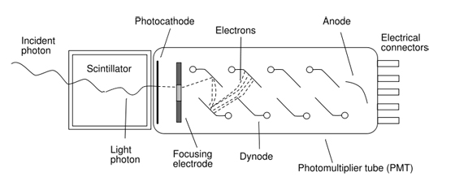

Скенери
Скенерите се използват за въвеждане на графична информация. Скенерите работят на принципа на
оптическо заснемане на изображението от хартиено копие или от фотофилм. Скенерите имат сканираща глава, която обхожда всяка точка на
изображението, и я заснема, кодирайки цвета или тона й като съответно число. Настолните скенери поемат листове с размери А4 или А3.
При тях листа се поставя неподвижно и се притиска от капак към стъкло, под което се движи сканираща глава. Настолните скенери имат
разделителна способност, която се измерва с величината брой точки на инч – dpi (dots per inch). Скенерите биват цветни и черно-бели.
Добрите цветни скенери разпознават над 16 милиона цвята (24- или 42-битов цвят).
Приложение на скенера
Скенерите доста приличат на ксерокса. Разликата е в това, че скенерът ви предлага нещо много
повече от това да направите копие. Той прави цифрово копие, преобразувайки документа или изображението в електронна форма, която
по-късно можете да редактирате или обработвате. Веднъж сканирано, изображението може да бъде запомнено като файл и след това да бъде
допълнително обработвано от графични програми като Adobe PHOTOSHOP, Corel PHOTO-PAINT, Adobe ILLUSTRATOR и др.
С помощта на софтуер за оптично разпознаване на символи (OCR-Optic Character Recognize), който върви със скенера, може да се
конвертира сканираното изображение на документа до текст. Този текст може да се вмъква и редактира в текстообработваща програма или
електронна таблица.
Основни принципи и технология на сканирането
В течение на годините скенерите не са се променили по отношение на основния им принцип на
работа: изображението се осветява, отразената от него светлина се преобразува от фоточувствителни клетки до напрежение, което се
конвертира в цифров (двоичен) вид и се изпраща към компютъра. Настоящите модели използват две технологии за сканиране: контактен
сензор за изображение CIS ( Contact Image Sensor) и по-старата технология – устройства със зарядно пренасяне CCD
(Charge Coupled Devise).
CIS–скенери
Тази технология на сканиране е по-нова и се среща по-рядко от CCD. При този тип скенери
сложната оптична система е заменена с ред от сензори, които се намират на няколко милиметра под стъклената повърхност. Осветяването
се извършва от ред червени, сини и зелени светодиоди (LEDs), разположени близо един до друг, за да образуват бяла светлина.
Отразената от изображението светлина попада върху фоточувствителните елементи на сензора. С помощта на филтри светлината се разделя
на трите основни цвята – червен, зелен и син. Вграденият в чипа аналого-цифров преобразувател конвертира информацията от сензора в
двоичен вид. Отсъствието на оптична система прави този тип скенери много леки и тънки, а използването на светодиоди за източник на
светлина води до намаляване на консумацията.
ССD-скенери
По-голямата част на днешните скенери са базирани на ССD (Charge Coupled Device) технологията. Този тип устройства се характеризират с по-сложна система, състояща се от източник на светлина, огледала, лещи, ССD-елемент и аналого-цифров преобразувател. Осветяването на изображението става с флуоресцентна лампа. Отразената светлина се насочва от система огледала, след което се фокусира от леща и достига до ССD. Той представлява масив от светлочувствителни елементи, които преобразуват попадналата върху тях светлина в напрежение. Различните степени на светлината дават различен интензитет на цвета. По-високият интензитет води до по-високо напрежение върху ССD-елемента и по-реалистичен цвят на сканираното изображение. Всеки елемент има три филтъра – за червената, за зелената и за синята светлина. Някои от ССD-скенерите извършват три отделни сканирания за всеки един от цветовете – червен, зелен и син. По-новите модели известни като еднопасови (Single pass) имат възможност да прочетат и трите цвята на един път. След като отразената светлина е преобразувана до напрежение, то се подава на аналого-цифров преобразувател, който конвертира информацията за цвета в двоичен вид.
Сложната оптична система от огледала и лещи води до по-големи размери и тегло на скенерите, но засега ССD-скенерите продължават да
бъдат по-надеждни за постигане на най-добро качество на сканираното изображение.
Барабанни скенери
При барабанните скенери документът се слага върху барабан (ролка), който при сканирането се завърта и придвижва изображението пред сканиращата глава. Използват се за сканиране на изображения от документи, с висока скорост. Този тип устройства използват различни сензори от настолните скенери и това им позволява значително по-бърза работа, както и по-висока чувствителност към градиента на разцветките. Тук използваният тип сензори се наричат photomultiplier, като за всеки пиксел има отделен сензор. При сензорите е възможно регистриране на изключително нискоенергийни частици, независимо в коя област на спектъра са. В комбинация с ниското ниво на шум от сензора, както и с високата скорост на реакция, това ги превръща в превъзходен избор за сканираща матрица за обработка на бързоподвижни изображения с ниско качество, например филмови ленти. Към настоящия момент на пазара съществуват няколко фирми, произвеждащи този тип устройства, които все още намират области на приложение благодарение на уникалните си характеристики. Тези скенери, обаче са прекалено скъпи, за да се ползват от домашните потребители.

Интерфейс на скенерите
Срещат се три варианта за свързване на скенерите към компютъра – чрез паралелния порт LPT,
чрез USB и чрез SCSI-интерфейса. Някои от евтините скенери работят с паралелен интерфейс, но тъй като все повече системи поддържат
USB-портове, USB–скенерите все повече изместват паралелните. На теория скоростта на USB –порта е между тази на мудния паралелен
порт и бързата SCSI-връзка. Но докато скенер с SCSI-интерфейс изисква да добавите SCSI-адаптер, да зададете адреси и да терминирате
последното устройство, инсталирането на USB-скенер става съвсем лесно и бързо.
Основни параметри на скенерите
Оптична разделителна способност
Един от основните параметри на скенера е неговата оптична разделителна способност, която има отношение към качеството и детайлите на сканираното изображение. Тя се измерва в брой точки на инч – dots per inch (dpi), като се посочват две стойности, например 600 х 1200 dpi. Първата се отнася до максималния брой точки по хоризонталата, които могат да бъдат сканирани и е равна на броя на сканиращите елементи на един инч. Ако оптичната разделителна способност е 600 dpi и ширината на сканиращата област е 8.5 инча, то общият брой на сканиращите елементи е 5100. Колкото е по-висока оптичната разделителна способност, толкова е по-добро качеството на сканираното изображение. Втората стойност е свързана с вертикалната разделителна способност. При сканиране рамото се движи по дължината на изображението от стъпков двигател. Този двигател трябва да бъде точен, за да може движението да бъде бавно и равномерно. В противен случай изображението няма да бъде пропорционално. Типичната вертикална стъпка е 1/1200 от инча, което дава вертикална разделителна способност 1200 dpi.
Дълбочината на цвета
Това е друг параметър на скенерите, който се дава в брой битове. Прецизността на цветовете се определя от чувствителността на сензорния елемент. Типичната дълбочина на цвета при по-старите класове скенери е 24 бита (по 8 бита за всеки основен цвят), но по-новите модели са вече с дълбочина на цвета 36 или 42 бита.
Устройство на принтери и скенери